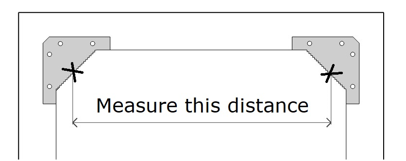

Hanging & Care
HANGING
Most of our mirrors can be hung both vertical or horizontal way. Decide which way you would like to hang the mirror based on the hangers provided.
-
Measure the distance between the notches on the 2 hangers fitted to the back of the mirror (see picture below).
 -
Use a spirit level to mark the distance on the wall, this will be the distance between your 2 screws/fixings. Make sure there is no working pipelines or electrical cables in place you want to drill.
-
Drill 2 holes for the wall fixings and screws. Use screws according to the type and load-bearing capacity of the wall. Leave approx. 10mm of the screw protruding from the wall. Use hooks or strong screws with a wide screw head only.
-
Hang the mirror onto the 2 screws, ensuring that the hangers are securely over the screw head. Because there are multiple “teeth” in the sawtooth hanger, you might need to move the mirror slightly so that it's hanging perfectly straight.
If you want your mirror free standing, ensure the mirror is stable and placed on a none slip surface.
CARE
Unless otherwise specified, our mirrors are usually finished in a durable clear or coloured hard top oil. Based on natural oils and enriched with high quality resins and waxes, this finish gives an excellent protection, with a pleasant natural effect. If necessary, the wood can be re-protected with transparent hard top oil without removing a previous coating.
Solid woods may expand and shrink with differences in temperature and humidity. Take care not to place a mirror close to areas of high heat or moisture.
Use a soft-bristle brush or damp microfibre cloth to wipe off the wooden frame. Do not use abrasive cleaning products to clean the mirror glass. Do not use cleaners that are not suitable for solid wood, especially solvent-based cleaners.
If you need further information regarding care & use, please contact us by email: hello@rustiko.eu.